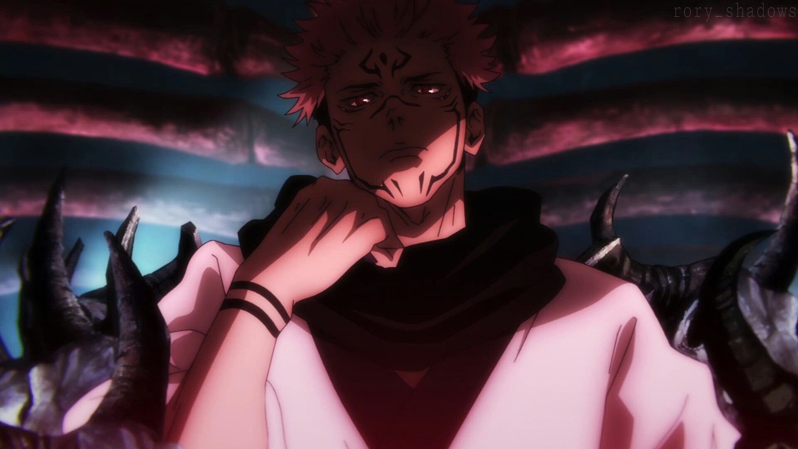
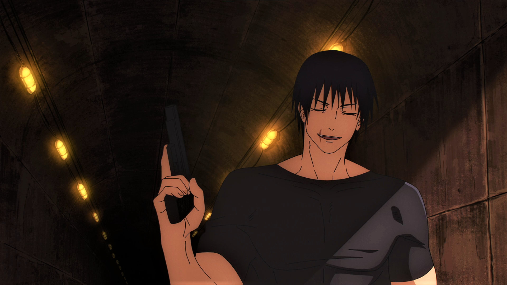
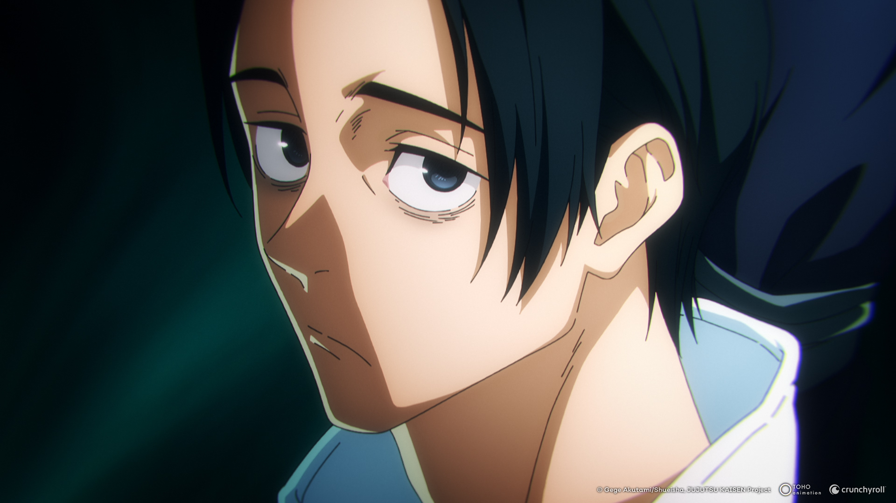
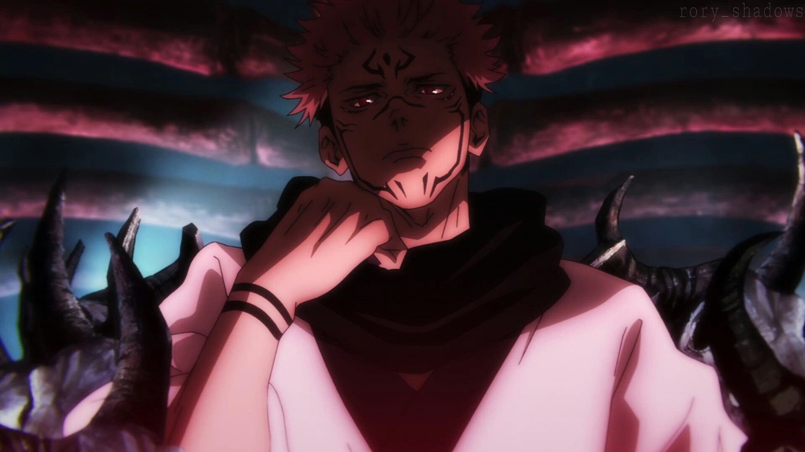
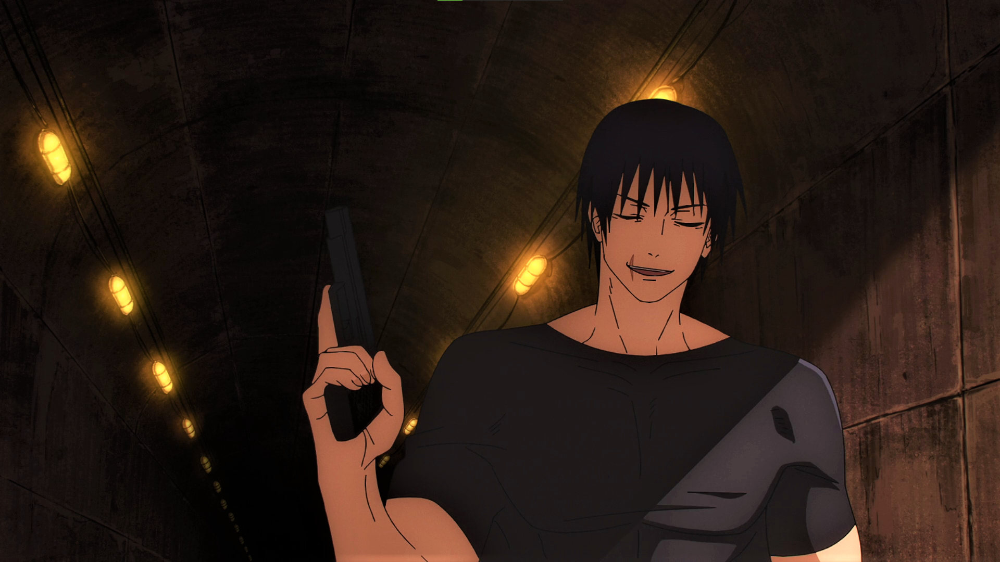
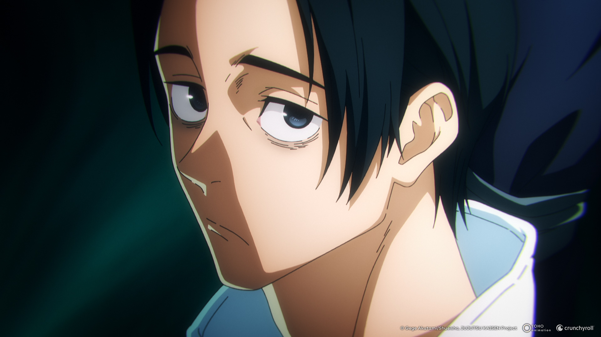

Satoro Gojo
Satoru Gojo é um personagem fictício da série de anime e mangá Jujutsu Kaisen criado por Gege Akutami. Ele fez sua primeira aparição na animação prequela Jujutsu Kaisen 0 como o mestre de Yuta Okkotsu, um adolescente amaldiçoado.
Sukuna
Ryomen Sukuna é um personagem fictício e um dos principais antagonistas da série de anime e mangá Jujutsu Kaisen, criada por Gege Akutami. Feiticeiro da Era Heian, era conhecido como o "Rei das Maldições" e considerado o mais poderoso de todos os tempos.
Toji Fushiguro
Toji Fushiguro, nascido Toji Zenin é um personagem recorrente na série Jujutsu Kaisen. Ele era um ex-membro da família Zenin e o infame assassino conhecido como Assassino de Feiticeiros, contratado pela Time Vessel Association entre outros grupos ao longo de seu tempo como usuário de não-maldição.
Yuta Okkutsu
Yuta Okkotsu é um personagem fictício e o protagonista do mangá Jujutsu Kaisen 0 feito por Gege Akutami. Ele é um jovem cercado e auxiliado pelo espírito amaldiçoado de Rika Orimoto, sua amiga de infância que morreu seis anos antes do enredo e amaldiçoada por causa da promessa de casamento feita quando eram crianças.